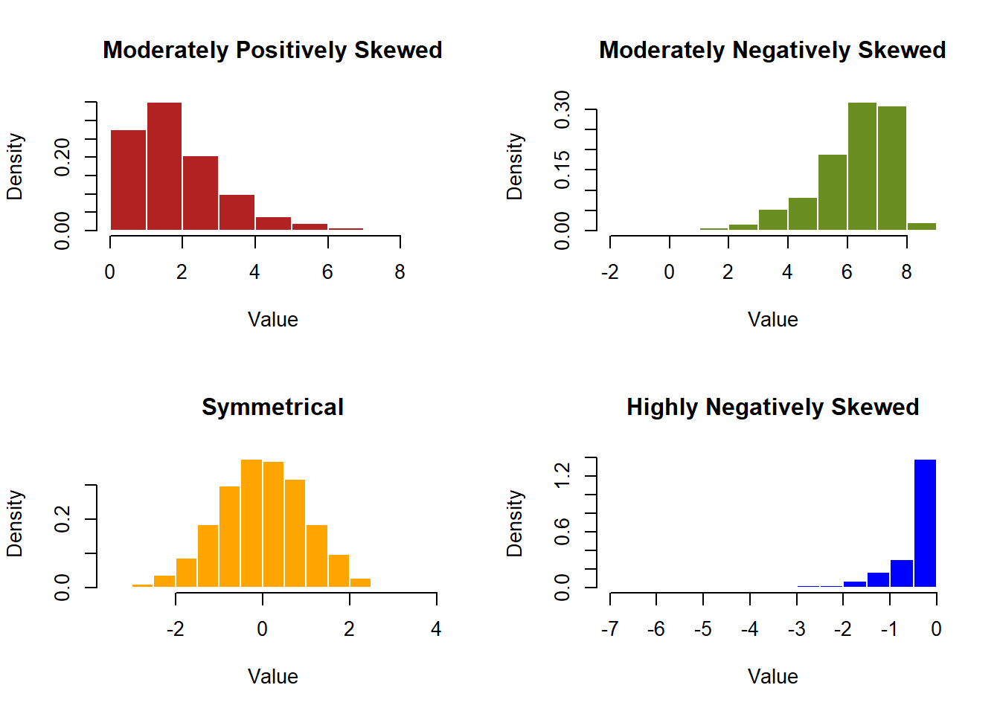
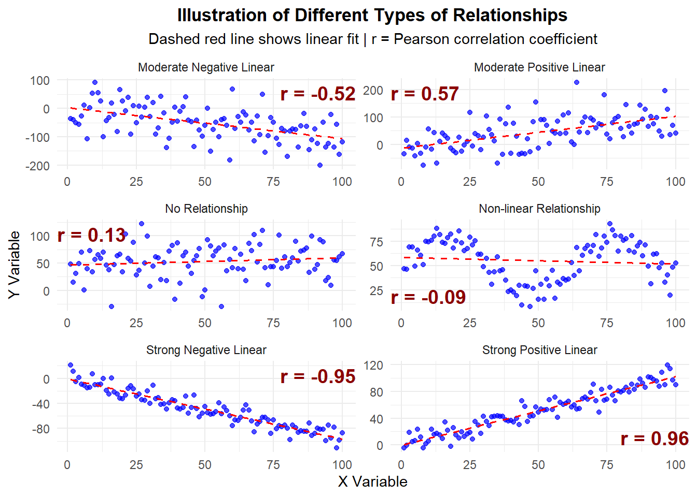

Chapter 2 Tabulation
2.1 Tabulating qualitative data
2.1.1 Frequency tables
Consider the Cows example. Suppose Rethabile wants to know how many of each cow breed are in the dataset. She can represent this using a frequency distribution.
Frequency Distribution: A frequency distribution is a tabular summary of data showing the number (frequency) of observations in each of several nonoverlapping categories or classes.
##
## 1 2 3
## 10 12 8From the table above, we can see that there are 10 cows from Breed 1 (Jersey), 12 cows from Breed 2 (Holstein), and 8 cows from Breed 3 (Ayrshire).
To create your own frequency table in Excel, follow the steps below:
Step 1: Go to the Insert tab, click on PivotTable, and select the “From Table/Range” option.

Step 2: Select the relevant data in Excel. Here, we want to analyse the Breed variable, so we only select the Breed column.

The PivotTable Fields panel will then pop up on the right of the screen.
 Step 3: Drag the Breed variable into the Rows area. This will create a table on your spreadsheet with the Breed categories.
Step 3: Drag the Breed variable into the Rows area. This will create a table on your spreadsheet with the Breed categories.

Step 4: Also drag Breed into the Values area. By default, Excel will calculate the Sum of the variable.
Q: Why is calculating the sum of the Breed incorrect?

Step 5: Click on Sum of Breed and select the Value Feed Settings option.

Step 6: Select the “Count” option. We want to count the number of times each breed occurs.


Step 7: The final result!
 This frequency distribution table contains the distinct Breed categories, and the number of each category in the dataset.
This frequency distribution table contains the distinct Breed categories, and the number of each category in the dataset.
2.1.2 Relative frequency and percent frequency
A frequency distribution shows the number (frequency) of observations in each of several nonoverlapping categories. However, we are often interested in the proportion, or percentage, of observations in each category.
The relative frequency of a category equals the fraction or proportion of observations belonging to a category.
For a data set with \(n\) observations, the relative frequency of each class can be determined as follows:
\[\textrm{Relative frequency of category } i = \frac{\textrm{number of observations in category } i}{n}.\] The percent frequency is the relative frequency multiplied by 100.
\[\textrm{Percent frequency of category } i = 100 \times \textrm{Relative frequency of category } i = 100 \times \frac{\textrm{number of observations in category } i}{n}.\]
Q: What is the relative frequency of Jersey cows (Breed 1) in the Cows dataset? What is the percent frequency?
To obtain a relative frequency distribution table in Excel, follow Steps 1-5 to obtain a frequency distribution table. Then do the following:
Step 7 (Percentage frequency distribution): In the Value Field Settings, navigate to the “Show Values As” tab.

Step 8 (Percentage frequency distribution): Select “% of Parent Row Total” and click OK.

Step 9 (Percentage frequency distribution): Final results!

To obtain a relative frequency distribution, simply edit your percentage frequency distribution as follows:
Step 9 (Relative frequency distribution): Click on “Number Format” in the Value Field Setings table.

Step 10 (Relative frequency distribution): Select “Number” and specify the amount of decimal places you want.

Step 11 (Relative frequency distribution): Final results!

Alternatively, you can manually create relative and percentage frequency tables from your frequency table as follows:


From the above tables, we can say the following about Jersey cows:
- There are 10 Jersey cows in the dataset.
- 33.3333% of the cows in the dataset are Jersey cows.
- The proportion of Jersey cows in the dataset is 0.3333.
Q: What can you say about Holstein cows? Ayrshire cows?
2.2 Tabulating quantitative data
We can also construct frequency, relative frequency and percent frequency distribution tables for quantitative data. The difference here is that quantitative data is not categorised. Thus, we need to create non-overlapping classes such that each observation is in a class. The number of classes generally recommended is between 5 and 20, with fewer classes being appropriate for smaller datasets, and more classes being appropriate for larger datasets.
The width of each class is calculated as follows:
\[\textrm{Class width } = \frac{\textrm{range of values}}{\textrm{number of classes}}=\frac{\textrm{max value} - \textrm{min value}}{\textrm{number of classes}}.\] Suppose Rethabile wants to summarise the weights of her cows. To create a frequency distribution table, she first needs to decide on classes. For small datasets, such as this one, 5 classes should be sufficient.
\[\textrm{Class width } = \frac{\textrm{max weight} - \textrm{min weight}}{\textrm{number of classes}} = \frac{615 - 420}{5} = 39.\]
She thus sets up the classes as follows:
Option 1 (incorrect):
| Class_ID | Class_Limits |
|---|---|
| 1 | 420-459 |
| 2 | 459-498 |
| 3 | 498-537 |
| 4 | 537-576 |
| 5 | 576-615 |
However, there is an issue with these classes. In which class should a cow be if its weight is 459kg? Or 576kg?
In order for these classes to be valid, they must be non-overlapping. To construct non-overlapping classes, add the class width minus one to the lower limit of each class. This results in the following class limits:
Option 2 (correct):
| Class_ID | Class_Limits |
|---|---|
| 1 | 420-458 |
| 2 | 459-497 |
| 3 | 498-536 |
| 4 | 537-575 |
| 5 | 576-614 |
| 6 | 615-653 |
Although these class limits are now valid, the final class, 614-653, will contain only one value (namely 615). The upper limit of 653 is much larger than the maximum of the dataset.
To solve this, Rethabile deicdes to slightly change the class width. Making the class width equal to 40, she ends up with the following class limits:
Option 3 (correct and convenient):
| Class_ID | Class_Limits |
|---|---|
| 1 | 420-459 |
| 2 | 460-499 |
| 3 | 500-539 |
| 4 | 540-579 |
| 5 | 580-619 |
In practice, there are various ways to define and update class limits, depending on preference. Both Options 2 and 3 are perfectly correct. For the purpose of this example, we will proceed with Option 3, but make sure you can also create a frequency table for Option 2!
To create a frequency table for continuous data in Excel, we can follow these steps:
Step 1: Create classes in Excel. Here, we have copied the Cow ID and Weight columns to a new sheet, for ease of reading. We then create a new column called Class, and assign each value to a class using the following formula:
\[=IF(\textrm{value}\leq\textrm{first lower limit};\textrm{ set class = }1; \textrm{value}\leq\textrm{second lower limit};\textrm{ set class = }2;... \textrm{value}\leq\textrm{fifth lower limit};\textrm{ set class = }5)\]

Step 2: Create a Pivot Table and select both the Weight and Class columns.

Step 3: Drag Class to the Rows area, and Weight to the Values area.

Step 4: Go to the Value Field Settings table for Weight, and change the “Summarise Values By…” option to Count.

Step 5: Final result!
 We can create the relative and pergentace frequency distribution tables either by editing the Pivot Table, or by adding manually calculating columns, just as in the categorical data case.
We can create the relative and pergentace frequency distribution tables either by editing the Pivot Table, or by adding manually calculating columns, just as in the categorical data case.
 From these tables, Rethabile can say the following:
From these tables, Rethabile can say the following:
- 33% of cows weigh between 580kg and 619kg.
- The proportion of cows in the lowest weight category is 0.2.
- 6 cows weigh between 540kg and 579kg.
Q: What else can you deduce from these tables?
2.3 Cumulative frequencies
Suppose we want to answer the following questions on the Cows dataset:
- How many cows weigh less than 500kg?
- What percentage of cows weigh at least 540kg?
In order to answer these questions, it is necessary to construct a cumulative frequency distribution. The cumulative frequency distribution shows the number of observations with values less than or equal to the upper limit of each class.
The structure of a cumulative frequency distribution table is shown below:
| Class | Value |
|---|---|
| 1 | # observations in Class 1 |
| 2 | # observations in Classes 1 and 2 |
| 3 | # observations in Classes 1, 2 and 3 |
| 4 | # observations in Classes 1, 2, 3 and 4 |
| 5 | # observations in Classes 1, 2, 3, 4 and 5, i.e. the total |
The table below is the cumulative frequency distribution based on the frequency distribution of Option 3 in the Cows example.
## Warning: package 'dplyr' was built under R version 4.3.3##
## Attaching package: 'dplyr'## The following objects are masked from 'package:stats':
##
## filter, lag## The following objects are masked from 'package:base':
##
## intersect, setdiff, setequal, union## New names:
## • `` -> `...4`
## • `` -> `...9`| Class | Frequency | Cumulative_Frequency |
|---|---|---|
| 1 | 6 | 6 |
| 2 | 4 | 10 |
| 3 | 4 | 14 |
| 4 | 6 | 20 |
| 5 | 10 | 30 |
To calculate the cumulative frequency table in Excel, simply add the frequency of each class to the frequency of all previous classes.


 The cumulative relative frequency and cumulative percentage frequency can be calculated as before.
The cumulative relative frequency and cumulative percentage frequency can be calculated as before.

Using the cumulative frequency tables, we can deduce the following:
- 14 cows weigh at most 539kg.
- Two-thirds (66.6667%) of the cows weigh less than 580kg.
What other questions can you think of?
2.4 Data Visualisation
2.4.1 Histograms with analysis toolpack
One of the most straightforward and useful ways to visualise data values is in the form of a histogram. A histogram is a visualisation of a frequency or relative frequency distribution. It has the data values on the \(x\)-axis, and the frequencies or relative frequencies on the \(y\)-axis.
To create a histogram in Excel, follow these steps:
Step 1: Navigate to the Data Analysis option on the Data tab.

Step 2: Select the Histogram option.

Step 3: Select the data range. In this case, we are creating a histogram of the temperatures. Also make sure you have “Chat Output” ticked. You can choose whether to plot the histogram on the current worksheet or on a new worksheet.

Step 4: The histogram with its bins (class limits) will be displayed.

Step 5: Histograms typically do not have gaps between the bars. To improve how this histogram looks, right click on any of the bars of the histogram and select “Format Data Series”.

Step 6: Change the “Gap Width” to 3% (or another small number).

Step 7: The final histogram will be displayed.

In the steps above, we created a histogram and allowed Excel to define the class limits. But what if we had our own class limits that we wanted Excel to use? First, type out the class upper limits.

Next, when you create the histogram, click on “Bin Range” and select the cells where you have typed out the class upper limits.

 The histogram will now use your defined classes.
The histogram will now use your defined classes.

Remove the legend and reduce the gaps between the bars to make the histogram look better.

Notice that Excel has created an extra class called “More”, for observations greater than 36 degrees Celsius. Since no such temperatures were observed, the “More” class is empty. Delete the cells to remove this class from the histogram.

The histogram now looks quite good! Only one thing remains: the axis labels. The histogram has automatically written the class upper limit in the middle of each bar. This could be deceptive. We want to display the midpoint of each class in the middle of each bar.
To do this, first create a column containing the values of the class midpoints. Then, right click on the histogram, select “Select Data” and then click on the Edit button under “Horizontal (Category) Axis Labels”.

Select the cells containing the class midpoints.

The final histogram now contains no empty categories, and is clear to read.

2.4.2 Bar charts
Whereas histograms are useful for visualising the frequency distributions of numerical variables, bar charts display the frequency distributions of categorical variables.
Consider the Weather variable in the climate dataset. Weather is a categorical variable, with possible values of Sunny, Cloudy, Rainy and Stormy. A frequency distribution would show how many observations had which type of weather. To create a bar chart of the Weather variable in Excel, do the following:
Step 1: Click on Insert \(\rightarrow\) PivotChart.
 Step 2: Select the data range (including the column header).
Step 2: Select the data range (including the column header).

Step 3: In the PivotChart Fields pane, drag Weather into the Axis (Categories) and Values areas.

Step 4: Remove the legend to make the chart simpler to read.

What if you already had a Pivot Table, and just wanted to create a bar chart? In that case, simply click on Insert \(\rightarrow\) 2D Column.

2.4.3 Pie charts
Pie charts present another way to represent categorical data. These are handy when comparing only a few categories (5 or less), with relatively large differences. Pie charts show the frequencies associated with categories as a percentage of the number of observations.
We will create a pie chart of the Air Quality variable in the climate dataset. Also make sure that you can repeat this on the Weather data!
Step 1: Create a pivot table.

Step 2: Drag AirQuality to the Rows and Values areas.

Step 3: Click on the pivot table, and navigate to Insert \(\rightarrow\) Recommended Charts \(\rightarrow\) All Charts, and select Pie.

Step 4: Format the chart (e.g. add a title) as desired.

Step 6 (optional): Since pie charts represent percentages, we might want to display these percentages on the chart. To do this, right click on any of the slices of the pie, and click on Add Data Labels.

Step 7 (optional): Format the text as desired.

2.4.4 Scatterplots
Scatterplots show the relationship between two numerical (or ordinal) variables. This is very useful for visualising the association between two variables, as we saw in the section on Correlation.
For this section, and the next, we will make use of the plant growth dataset. The first 6 entries in the dataset are shown below. The variables are as follows:
- Day: The day on which the observations were recorded.
- Temperature: The daily temperature.
- Rainfall: The daily rainfall.
- Sunlight: The daily hours of sunlight received by the plants.
- Plant A Height: The height of plant A in cm.
- Plant B Height: The height of plant B in cm.
| Day | Temperature (°C) | Rainfall (mm) | Sunlight (hrs) | Plant A Height (cm) | Plant B Height (cm) |
|---|---|---|---|---|---|
| 1 | 21.0 | 2.3 | 6.0 | 18.1 | 18.4 |
| 2 | 19.7 | 1.2 | 7.9 | 19.6 | 20.7 |
| 3 | 21.3 | 0.3 | 8.5 | 20.4 | 20.3 |
| 4 | 23.0 | 1.4 | 8.4 | 20.6 | 19.8 |
| 5 | 19.5 | 0.1 | 5.7 | 18.3 | 20.9 |
| 6 | 19.5 | 4.8 | 6.5 | 19.2 | 16.8 |
Let’s create a scatterplot showing the relationship between plant A’s height and the amount of sunlight received.
Step 1: Select the data columns and navigate to Insert \(\rightarrow\) Recommended Charts \(\rightarrow\) Scatter.


Step 2 (optional): Once the plot has been created, we can (optionally) change the values on the axes, so that there isn’t as much white space on the plot.


Step 3 (optional): By right-clicking on any of the data points, and then clicking on “Add Trendline”, we can add a line that shows the general trend of the points.


Step 4 (important!): When creating a scatterplot, Excel does not create axis titles by default. You can create axis titles by clicking on the plus next to the plot, and then checking the box next to “Axis Titles”.

Step 5: Modify the axis titles to represent the variable names, and give the chart a meaningful title.

2.4.5 Line plots
Line plots are used to illustrate trends over time. The time variable, which can be numerical or ordinal (e.g. months), is on the \(x\)-axis, and the value of the other (numerical) variable is on the \(y\)-axis.
Let us create a plot of the height of plant A over time.
Step 1: Select the columns containing the data you want to plot, then navigate to Insert \(\rightarrow\) Recommended Charts \(\rightarrow\) All Charts \(\rightarrow\) Line \(\rightarrow\) choose the second option.

Step 2: Customise the chart title and axis titles.

Based on this plot, we can see that plant A grows slightly higher over time.
Q: What is the correlation coefficient between the day and plant A’s height? How would you interpret this value?
Also plot and interpret how plant B’s height changes over time.
2.4.6 Other plots
Aside from the plots we have learned about thus far, there are still many other types of plot! The variables, their values, and the insights you are trying to gain from them will determine which kind of plot is right for your case.
SANKEY plots https://sankeymatic.com/ and other types as well as part of a search they do
2.5 Numerical Measures
Although tables are very helpful, there is a wealth of information that can still be extracted from a dataset by calculating numerical measures. These measures can speak to the location of the data on the number line, how spread out or compact the data is, the symmetry of the data values, and the relationships between variables.
2.5.1 Example
Kgomotso is a climate scientist who has collected a dataset on temperature, rainfall, humidity, wind speed, weather and air quality at 150 locations across a study area in South Africa. The first 6 entries in the dataset are shown below.
| Temperature_C | Rainfall_mm | Humidity_pct | WindSpeed_kmh | Weather | AirQuality |
|---|---|---|---|---|---|
| 23.49 | 39.20 | 68.10 | 16.90 | Sunny | Good |
| 20.39 | 45.78 | 73.17 | 16.24 | Rainy | Good |
| 24.28 | 18.21 | 65.54 | 14.44 | Stormy | Good |
| 28.07 | 59.94 | 74.71 | 31.25 | Sunny | Unhealthy |
| 21.54 | 51.15 | 77.38 | 15.13 | Cloudy | Moderate |
| 20.01 | 26.46 | 65.44 | 14.56 | Rainy | Moderate |
Kgomotso would like to answer questions like the following:
- What is the average rainfall in the area?
- What is the most common weather that occurs in the area?
- What is the variability like in the temperature data? Is there low or high variability?
- Is there a relationship between humidity and rainfall?
Q: What other questions can you think of?
2.5.2 Measures of location
The first kind of numerical measure we will look at are measures of location. These measures tell us something about how large the values are.
2.5.2.1 Mean
The mean (also called the average) is simply the average value of a variable. For a sample, it is denoted by \(\bar{x}\), and is calculated by the formula below:
\[\bar{x} = \frac{\textrm{Sum of the values}}{\textrm{Number of observations}}=\frac{\sum_{i=1}^nx_i}{n},\] where \(n\) is the sample size.
For a population, it is denoted by \(\mu\).
To calculate the mean in Excel, we use the AVERAGE function, with the following syntax:
\[=\textrm{AVERAGE(range of the data)}.\] Using this formula in Excel, the mean temperature is 20,6234 degrees Celsius. See if you can obtain this value. Also calculate the means of the other continuous variables, for practice!
2.5.2.2 Median
The median of a set of observations is the middle value. The median can be obtained by arranging all of the observations in order, from smallest to largest. If the number of observations is uneven, the median is simply the middle value. If the number of observations is even, the median is the average of the two middle values (i.e. the sum of the middle values divided by 2).
To calculate the median in Excel, use MEDIAN function:
\[=\textrm{MEDIAN(range of the data)}.\] Using this formula, the median temperature is 20,745. See if you can reproduce this value, and also calculate the median temperature of the other continuous variables.
2.5.2.3 Mode
The mode is the most commonly occurring value in the dataset. It can be found in Excel as follows:
\[=\textrm{MODE.SNGL(range of the data)}.\] The most commonly occurring temperature is 15,78 degrees Celsius. In fact, this is the only recorded temperature that occurs more than once.
Since the temperature data contains only one most-observed value, or one mode, it is called unimodal. It can happen that a dataset contains two or more modes. For example, if the temperature 21.3 had occurred twice (the same number of times as 15.78), there would have been two modes. In this case, we would have called the temperature data bimodal. If more than two modes exist, the data is called multimodal.
Investigate the other continuous variables to determine their modes.
2.5.2.4 Weighted mean
The formula for the mean could be rewritten in the following way:
\[\bar{x} = \frac{\textrm{Sum of the values}}{\textrm{Number of observations}}=\frac{\sum_{i=1}^nx_i}{n} = \frac{1}{n}x_1+\frac{1}{n}x_2+...+\frac{1}{n}x_n.\]
Here, we can see that each observation (each \(x_i\)) has a coefficient of \(\frac{1}{n}\). This coefficient is also called the weight. When calculating the mean, all of the weights are equal. However, there are some cases where we might want to assign different weights to different observations.
A common example of a weighted mean is when a student’s average mark is calculated taking the credits of each module into account. Suppose a student has the following academic record:
| Module | Mark | Credits |
| Calculus | 70 | 16 |
| Physics | 65 | 12 |
| Scientific Literacy | 58 | 8 |
The mean would simply be \(\frac{70+65+58}{3}\approx 64.33.\) The weighted mean, however, can be calculated as follows:
\[\textrm{Weighted mean} = \frac{(16\times70)+(12\times65)+(8\times58)}{36} \approx 65.67.\] NOTE: The value of 36 is simply the credits added together.
Since the student performed better in calculus, which had more credits than the other modules, the weighted mean gives a higher mark than the mean.
(P.S.: This is one of the reasons why it is important to do well in your high-credit modules!)
The formula for the weighted mean is given as follows:
\[\textrm{Weighted mean} = \frac{\sum_{i=1}^nw_ix_i}{\sum_{i=1}^nw_i}.\] The weighted mean in Excel needs to be calculated manually. The images below show how this can be done in the case of the student’s marks.


2.5.2.5 Geometric mean
The geometric mean, denoted by \(\bar{x}_g\), is an alternative mean calculation that is used in financial data, specifically when studying financial growth rates. The formula for the geometric mean is given below:
\[\bar{x}_g=(x_1\times x_2 \times ... \times x_n)^{\frac{1}{n}},\] i.e. it is the \(n\)th root of the product of the observations.
2.5.2.6 Percentiles
A percentile provides information about how the data are spread over the interval from the smallest value to the largest value. For a data set containing \(n\) observations, the \(p\)th percentile is the value such that approximately \(p\%\) of the observations are less than the \(p\)th percentile.
Letting \(L_p\) denote the location of \(p\)th percentile, the formula is given as follows:
\[L_p = \frac{p}{100}(n+1).\] We have already worked with one percentile. The median is actually just the 50th percentile! It is the value exactly in the middle of the range of observations, i.e. 50% of observations are less than the median.
To find the location of the median in the temperature dataset, we would do the following:
\[L_{50}=\frac{50}{100}(150+1)=75.5.\] In other words, the median is the value between the 75th and 76th observations, if the observations are ranked from smallest to largest.
Verify that you obtain a value of 20,745 when applying this method.
To calculate the \(p\)th percentile in Excel, we use the PERCENTILE.EXC function:
\[\textrm{The } p\textrm{th percentile}=\textrm{PERCENTILE.EXC}\left(\textrm{range of the data;}\frac{p}{100}\right)\] Suppose Kgomotso wants to know what the temperature value is such that 63% of the recorded temperatures are less than this value. To answer his question, he first recognises that \(p=63\) in this case. He then applies the Excel formula as follows:
\[=\textrm{PERCENTILE.EXC(A2:A151; 0,63)}\] This gives a value of 22,0443. Thus, he can say that 63% of the recorded temperatures are less than 22,0443 degrees Celsius.
2.5.2.7 Quartiles
Much like percentiles, quartiles divide the data up into equal parts. Whereas percentiles divide the data up into 100 parts, quartiles divide the data into 4 parts, i.e. there are 4 quartiles. The table below shows the relationship between the quartiles and other measures of location.
| Quartile | Percentile | Other measure of location |
| Q1 | 25th percentile | |
| Q2 | 50th percentile | Median |
| Q3 | 75th percentile | |
| Q4 | 100th percentile | Maximum |
In Excel, quartiles are calculated using the QUARTILE.EXC function:
\[\textrm{Quartile }k=\textrm{QUARTILE.EXC(data range, }k)\] The 1st quartile of the temperature data is 17.38, i.e. a quarter of the temperatures are lower than 17.38.
Calculate and interpret the rest of the quartiles for the temperatures. Also see if you can calculate and interpret the quartiles for the other continuous variables in the environmental dataset!
2.5.3 Measures of variability
Measures of variability describe how the values in a dataset vary. They can tell us whether the values are close together or far apart.
2.5.3.1 Range
The range is the difference between the highest and lowest value in a dataset.
\[\textrm{Range}=\textrm{max value}-\textrm{min value}.\] In the climate dataset, the range of the temperature is \(33.02-9.23=23.79\) degrees Celsius. Using our knowledge of temperature, we can see that this is a relatively wide range of temperatures.
The range is susceptible to extreme values. For instance, suppose Kgomotso had observed 149 temperatures between 9.23 and 15, and one value of 33.02. The range would then be quite large compared to the real values observed.
2.5.3.2 Interquartile range
The interquartile range (IQR) is a more robust version of the range. It is calculated as follows:
\[\textrm{IQR}=Q_3-Q_1.\] From this formula, we can see that a very small minimum or a very large maximum will not affect this measure of variability.
Given that we have calculated the quartiles in Excel, calculating the IQR is quite straightforward.
Using the quartiles we previously calculated for the temperature, the interquartile range of the temperature is \(Q_3-Q_1=23.9-17.38=6.52\). This hints at less variability than the range suggested.
See if you can reproduce this value! Also determine the IQR for the other continuous variables.
2.5.3.3 Variance
The variance is a measure of variability that includes all observations in a dataset in its calculation. The idea behind the variance is to calculate a measure of how far the observations are from the mean.
The difference between an observation \(x_i\) and the mean is called a deviation about the mean. For a sample, it is written as \(x_i-\bar{x}\), and for a population it is denoted by \(x_i-\mu\).
If we sum the deviations, however, we simply get a value of 0. This can be seen in the following example:
| x1 | x2 | x3 | x4 | x5 |
| 5 | 3 | 7 | -3 | -1 |
The sample mean of this dataset is \(2.2\). The deviations are given as follows:
| x1 | x2 | x3 | x4 | x5 |
| 2.8 | 0.8 | 4.8 | -5.2 | -3.2 |
Adding this together, we obtain \(2.8+0.8+4.8-5.2-3.2=0.\) This is not very informative at all!
To overcome this difficulty, the variance takes an average of squared deviations.
The formula for the population variance is given by: \[\sigma^2=\frac{\sum_{i=1}^n(x_i-\mu)^2}{N},\] where \(N\) is the population size.
The formula for the sample variance is given by: \[s^2=\frac{\sum_{i=1}^n(x_i-\bar{x})^2}{n-1},\] where \(n\) is the sample size.
We can calculate the population and sample variance in Excel by VAR.P and VAR.S respectively:
\[\textrm{Population variance }=\textrm{VAR.P(range of the data).}\] \[\textrm{Sample variance }=\textrm{VAR.S(range of the data)}.\] The climate dataset is of course a sample, since it does not contain the temperature at every single point across the area. Thus, the sample variance is appropriate here.
The sample variance for the temperatures is 22,5331 degrees Celsius squared (note that, since the deviations are squared, the units are also squared). We can conclude that, on average, the observed temperatures differ from the mean by approximately 22.5331 degrees Celsius squared.
Make sure you can calculate and interpret the sample variances of all the other variables in the climate dataset!
2.5.3.4 Standard deviation
Although the variance is very helpful in determining the spread of data, it does have some limitations. The first limitation is the units. Degrees Celsius squared, humidity percentage squared, and so on, are not easy to interpret.
The standard deviation offers a solution. The standard deviation is simply the square root of the variance.
\[\textrm{Population standard deviation}=\sigma=\sqrt{\sigma^2}=\sqrt{\frac{\sum_{i=1}^n(x_i-\mu)^2}{N}}.\] \[\textrm{Sample standard deviation}=s=\sqrt{s^2}=\sqrt{\frac{\sum_{i=1}^n(x_i-\bar{x})^2}{n-1}}.\] To calculate the population and sample standard deviation in Excel, we use the STDEV.P and STDEV.S functions respecitvely.
The standard deviation retains the original units. The standard deviation of the temperature is 4,7469 degrees Celsius. Thus, we can say that the average temperature observed deviates from the mean by about 4,7469 degrees Celsius.
Make sure you can calculate and interpret the sample standard deviation for all other continuous variables in the climate dataset!
2.5.3.5 Coefficient of variation
In the climate dataset, the mean temperature is 20,62, while the standard deviation is 4,75. The mean rainfall is 19,62, while its standard deviation is 14,9. It seems that the standard deviation of the temperature is relatively small compared to the mean, whereas the mean and standard deviation of the rainfall are similar. But this is just based on our intuition about the values.
The coefficient of variation is a measure that tells us how large the standard deviation is relative to the mean. It is usually written as a percentage.
\[\textrm{Coefficient of variation =} \left(\frac{\textrm{Standard deviation}}{\textrm{Mean}}\times100\right)\%.\] This can be calculated manually in Excel. Using this formula, we find that the coefficient of variation for temperature is 23%, whereas the coefficient of variation for rainfall is 76%. This tells us that the standard deviation of the temperature is only 23% of its mean, whereas the standard deviation of the rainfall is 76% of its mean. This confirms our earlier intuition.
2.5.4 Measures of shape, relative location & detecting outliers
2.5.4.1 Distribution shape
The figure below shows histograms of relative frequency distributions with different shapes. The top two are moderately skewed. If a distribution has mostly low values and few high values, it is called positively skewed. If it has mostly high values and few low values, it is called negatively skewed. This is in contrast to the third histogram, which represents a symmetrical distribution. The final histogram is strongly negatively skewed, showing that skew distributions can be moderately or strongly skew.
We can quantify how skew a distribution is with a measure called skewness. For the histograms given below, the skewness values are as follows:
- First histogram (moderately positively skew): \(\approx 1.37\)
- Second histogram (moderately negatively skew): \(\approx -1.37\)
- Third histogram (symmetrical): \(\approx -0.05\)
- Fourth histogram (highly negatively skew): \(\approx -3.0\)

## Loading required package: moments## Skewness values:## Moderately Positive: 1.369491## Moderately Negative: -1.374459## Symmetrical: -0.05202002## Highly Negative: -2.999789We can calculate skewness in Excel using the =SKEW function:
\[\textrm{Skewness}=\textrm{SKEW(range of the data)}.\] Calculate and interpret the skewness of all of the continuous variables in the climate dataset.
HINT: The skewness of the temperature variable is \(\approx 0,0170\), which is approximately symmetrical.
2.5.4.2 z-Scores
One problem that we have not yet addressed is how to compare distributions. Measures of relative location help us determine how far a particular value is from its mean, and, when standardised, can be compared across distributions.
We can determine the location of any observation relative to its mean by standardising it using the mean and standard deviation. Such a standardised value is called a \(z\)-score. For every observation \(x_i\) in a sample of \(n\) observations, its corresponding \(z\)-score is given by:
\[z_i=\frac{x_i-\bar{x}}{s},\] where \(\bar{x}\) is the sample mean and \(s\) is the sample standard deviation.
The \(z\)-score can be interpreted as the number of standard deviations an observation is away from the mean. For instance, a \(z\)-score of 1 means that the observation is 1 standard deviation above the mean. A \(z\)-score of -2 means that the observation is 2 standard deviations below the mean.
For example, the maximum is approximately 2.6 standard deviations above its mean. The maximum rainfall is approximately 3.84 above its mean. From this, we can conclude that the maximum temperature is closer to its mean than the maximum rainfall is to its mean.
Calculate and interpret the \(z\)-score of the maximum of each other continuous variable in the climate dataset.
2.5.4.3 Empirical rule
The empirical rule is a rule of thumb that applies to bell-shaped (symmetrical) distributions. It states the following:
- Approximately 68% of all observations lie within one standard deviation above or below the mean, i.e. within \(\mu-\sigma\) and \(\mu+\sigma\).
- Approximately 95% of all observations lie within two standard deviations above or below the mean, i.e. within \(\mu-2\sigma\) and \(\mu+2\sigma\).
- Approximately 99.7% of all observations lie within three standard deviations above or below the mean, i.e. within \(\mu-3\sigma\) and \(\mu+3\sigma\).
2.5.4.4 Detecting outliers
Outliers are unusually small or unusually large values that could give us a false impression about the rest of our data. For example, suppose a group of students was asked to record their 100m sprint time, but one of them was actually an Olympic athlete. Whereas averagely fit students would average between 15 and 20 seconds, the Olympian might be able to complete the sprint in under 10 seconds. If we did not eliminate this outlier, we might conclude that the average student’s minimum 100m sprint time is under 10 seconds - close to a world record!
Based on the measures we have learned so far, there are two ways to detect outliers:
Using \(z\)-Scores: An observation with a corresponding \(z\)-score that is less than -3 or greater than 3 can be considered an outlier. Based on the Empirical rule, this would be less than \(100-99.7=0.03\%\) of observations!
Using the IQR: The lower and upper limits are given as follows: \[\textrm{Lower limit }=Q_1-1.5\times IQR \\ \textrm{Upper limit }=Q_3+1.5\times IQR. \]
An observation that is smaller than \(Q_1-1.5IQR\) or larger than \(Q_3+1.5IQR\) is considered an outlier.
The maximum and minimum \(z\)-scores of the temperature variable in the climate dataset are approximately 2.6 and -2.4 respectively. Based on the \(z\)-scores, there are no outliers in the observed temperatures. For the IQR method, the lower limit for outliers is 7.65 and the upper limit is 33.61. The IQR method thus also concludes that there are no outliers.
Use both method to determine whether or not there are any outliers in the other continuous climate variables!
2.5.4.5 The five-number summary
The five-number summary is a comprehensive way to summarise numerical data using measures of location. The five numbers in question are: the minimum, \(Q_1\), \(Q_2\), \(Q_3\) and the mean.
The five-number summary for the temperature data is given below.
| Measure | Value |
| Minimum | 9.23 |
| Q1 | 17.38 |
| Q2 | 20.745 |
| Q3 | 23.87 |
| Maximum | 33.02 |
The five-number summary also enables us to calculate the range and the IQR. It can also be displayed graphically using boxplots, which we will cover in the next section.
2.5.4.6 Boxplots
Boxplots are visual representations of the five-number summary, and are very useful for visually summarising data.
To draw a boxplot, we perform the following steps:
- Draw a box, with the limits of the box located at \(Q_1\) and \(Q_3\).
- Draw a in the box at the location of the median, \(Q_2\).
- Draw a line from the box, down from the lower end of the box to the minimum non-outier, i.e. the smallest observation larger than \(Q_1-1.5\times IQR\).
- Draw another line up from the higher end of the box to the maximum non-outlier, i.e. the highest observation lower than \(Q_3+1.5\times IQR\). These lines are called whiskers.
- If the dataset contains an outlier, draw a dot to represent each outlier.
The boxplot for the rainfall data is shown below:

Excel also prints the mean on the boxplot, represented by \(\times\).
In order to create a boxplot in Excel, follow these steps:
Step 1: Select the data

Step 2: Navigate to Insert \(\rightarrow\) Recommended Charts

Step 3: Click on “All Charts”

Step 4: Click on “Box & Whisker”

Step 5: Customise as desired

Boxplots can also be drawn side-by-side to compare groups of data. This is most useful if it is comparable data groubed into categories. For example, boxplots may not be particularly useful when comparing rainfall and temperature. However, grouped temperature data could be compared this way. Below, we have grouped the temperature according to the weather.

To create side-by-side boxplots, first select the data. Then, as before, navigate to Insert \(\rightarrow\) Recommended Charts \(\rightarrow\) All Charts \(\rightarrow\) Box & Whisker.

Once the chart is displaying, click on the plus-icon next to the chart to insert a legend.

Finally, customise the plot as desired and include an informative title.
 From this plot, we can see that rainy-weather temperatures varied less, and in general seemed to be colder than the other types of weather.
From this plot, we can see that rainy-weather temperatures varied less, and in general seemed to be colder than the other types of weather.
2.5.5 Measures of association
The final measures we will consider are measures that quantify the association between two variables.
2.5.5.1 Covariance
The covariance between two variables \(X\) and \(Y\) measures the strength of the (linear) relationship between \(X\) and \(Y\). The sample covariance is denoted by \(s_{XY}\) and is calculated as follows:
\[s_{xy}=\frac{\sum_{i=1}^n(x_i-\bar{x})(y_i-\bar{y})}{n-1}\]
To obtain the sample covariance in Excel, use the COVARIANCE.S function as follows:
\[\textrm{Covariance between }X\textrm{ and }Y= \textrm{COVARIANCE.S(range of }X,\textrm{range of }Y).\] To obtain the covariance between temperature and rainfall, for instance, we would use the following syntax:
\[=\textrm{COVARIANCE.S(A1:A151,B1:B151}),\] and obtain a value of approximately -3.44.
The covariance can be interpreted as follows:
- A large positive value means that the two variables have a strong positive linear relationship. As the one increases, the other increases by a similar amount.
- A moderate positive value means that the two variables have a moderate positive linear relationship. As the one increases, the other increases by a smaller amount.
- A large negative value means that the two variables have a strong negative linear relationship. As the one increases, the other decreases by a similar amount.
- A moderate negative value means that the two variables have a moderate negative linear relationship. As the one increases, the other decreases by a smaller amount.
- A value close to zero means that there is no linear relationship between the two variables. The one increasing does not influence whether the other increases or decreases linearly.
In the data visualisation section, we will explore how covariance can be seen visually.
2.5.5.2 Correlation
One problem with the covariance is that there is no way to know what constitutes “large” or “small” without inspecting the data values. To solve this problem, the correlation between two variables \(X\) and \(Y\) is a standardised version of the covariance, obtained by dividing the covariance by the product of the variables’ individual standard deviations. The sample correlation coefficient is denoted by \(r_{XY}\) and is calculated as follows:
\[r_{xy}=\frac{s_{xy}}{s_xs_y}.\]
To obtain the sample correlation coefficient in Excel, use the CORREL function as follows:
\[\textrm{Correlation coefficient between }X\textrm{ and }Y= \textrm{CORREL(range of }X,\textrm{range of }Y).\] To obtain the correlation between temperature and rainfall, for instance, we would use the following syntax:
\[=\textrm{CORREL(A1:A151,B1:B151}),\] and obtain a value of approximately -0,05.
Unlike the covariance, the correlation takes on values between -1 and 1 (inclusive), i.e. \[-1\leq r_{xy}\leq 1\].
The correlation coefficient can be interpreted as follows:
- A value close to 1 means that the two variables have a strong positive linear relationship. As the one increases, the other increases by a similar amount.
- A positive value not close to 1 nor close to 0, e.g. 0.7, means that the two variables have a moderate positive linear relationship. As the one increases, the other increases by a smaller amount.
- A value close to -1 means that the two variables have a strong negative linear relationship. As the one increases, the other decreases by a similar amount.
- A negative value that is not close to 0 or -1 means that the two variables have a moderate negative linear relationship. As the one increases, the other decreases by a smaller amount.
- A value close to zero means that there is no linear relationship between the two variables. The one increasing does not influence whether the other increases or decreases linearly.
The plot below illustrates how these relationships would look visually. Note that a correlation near 0 does not mean that the variables have no relationship - just that they do not have a linear relationship.
## Warning: package 'ggplot2' was built under R version 4.3.3